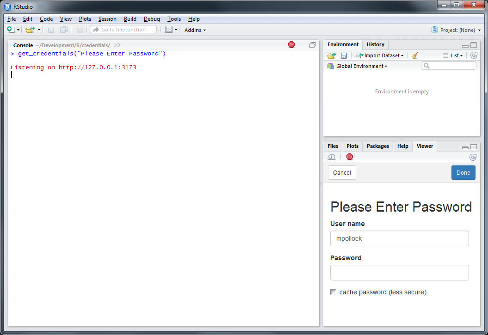
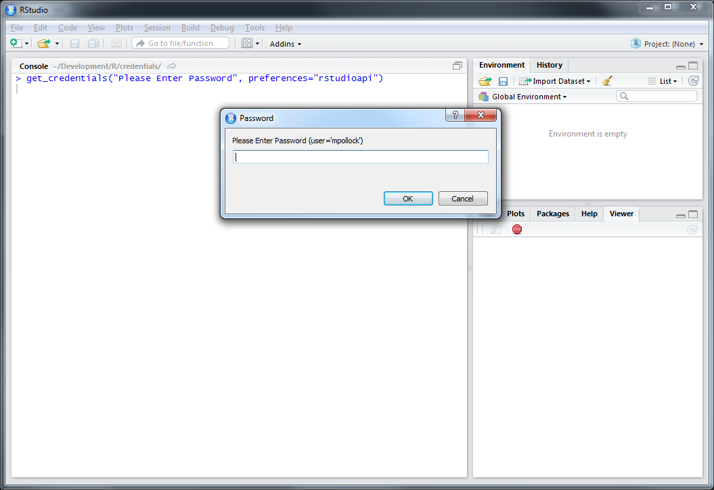
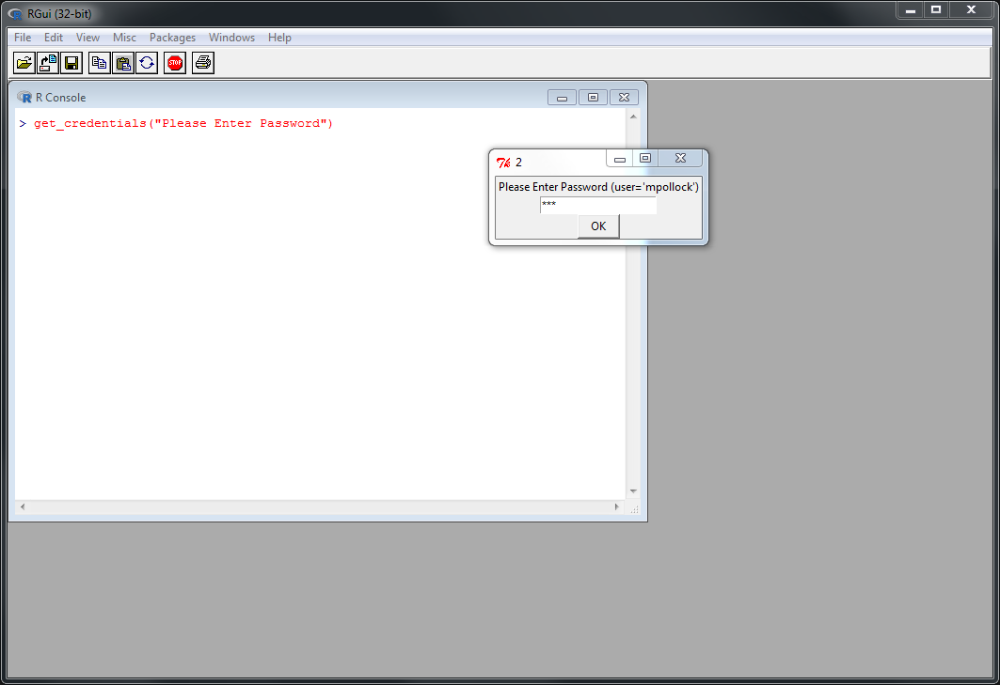

Introduction to the Credentials package
Matt Pollock
2017-11-07
Asking for user credentials in R is tricky because R can be run in many different ways. There are interactive and non-interactive R sessions. R can be run in text mode on a terminal, with RStudio, or using the R GUI. The displays available vary as do the system libraries R may or may not be compiled with. The packages that any given R user has installed are likely to differ. With any given set of the above options each credentialing system may or may not work. No credentialing option that prevents a plain-text password from being passed to a function or typed into the console works in every R environment.
The credentials package approaches this problem by accepting that no one-size-fits all solution exists, so the next best thing is the figure out which solution will work in any given situation.
Credentialing Options
There are currnetly four credentialing options:
Shiny + miniUI
get_credentials_via_shiny() uses a shiny app to ask for credentials. This is the default whenever R is being run from RStudio. It is also available for from R GUI though it is not the default because it opens the app in a browser in that case.

rstudioapi
Another approach is to use the rstudioapi package with get_credentials_via_rstudioapi(). This option is only available if R is running from RStudio and is never the default recommended approach unless the CRAN packages (shiny and miniUI) necessary for the shiny-based approach are not installed. It is a little bit faster than the shiny approach, but since we are talking about humans typing inpu there the speed difference is negligable.

tcltk
The third option is using tcltk. This requires that R was compiled with tcltk and that the tcltk package is installed. It is also necessary to be running R with an available display. One tricky corner-case here is with RStudio Server, which does not work well with tcltk.
With RStudio (desktop) it looks like: 
When running with R GUI you will get something like: With RStudio (desktop) it looks like: 

Package Dependencies
The credentials package does not declare any dependencies on purpose. This avoids situations where, for example, people who always use R on the command line would be compelled to install the shiny package when a readline-based solution with echoing turned off would be sufficient. Furthermore, the package is really intended to be used by other packages, not directly from the console. As such it is reasonable to punt to the parent package to declare whatever dependencies the package authors desire. Thus, for example, if tcltk is the preference of a given package author, he or she may declare a tcltk dependency and specify that as a preferred method when calling get_credentials() to ensure that tcltk will be used whenever possible.